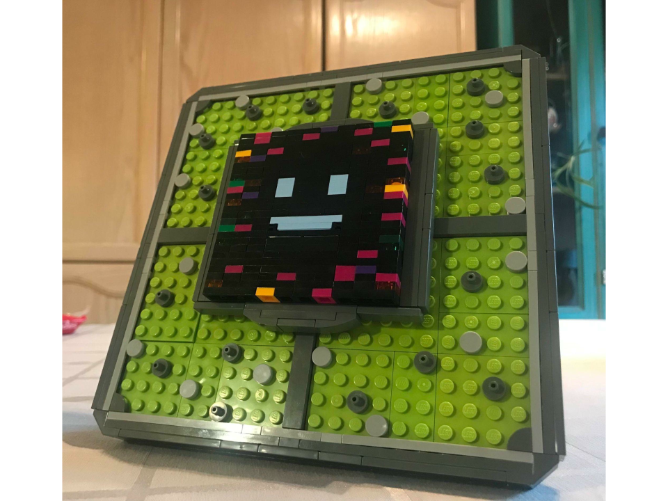
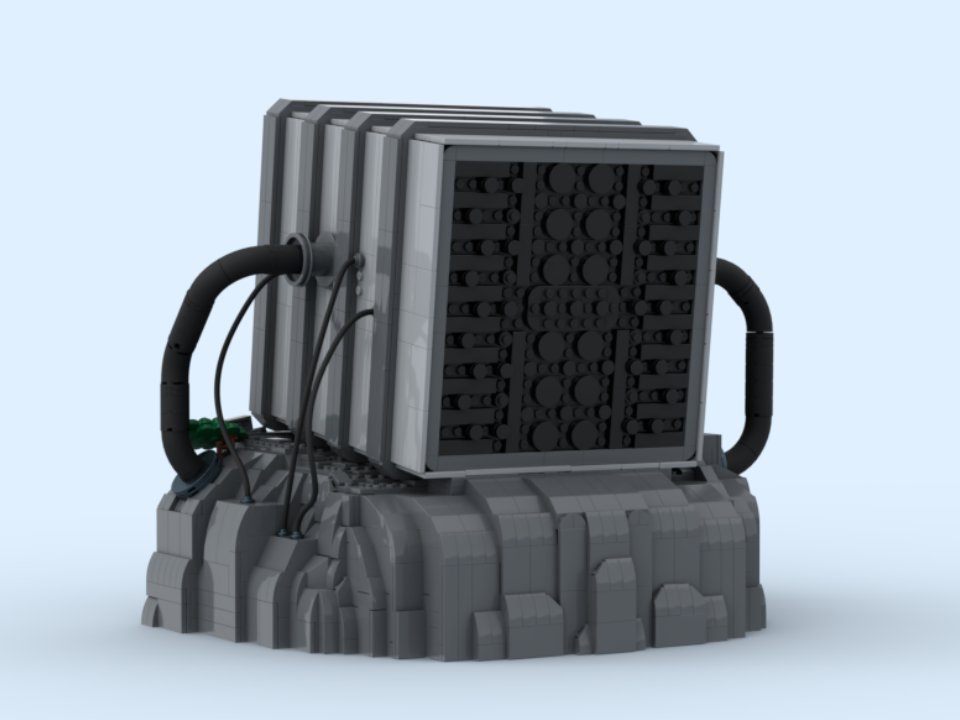
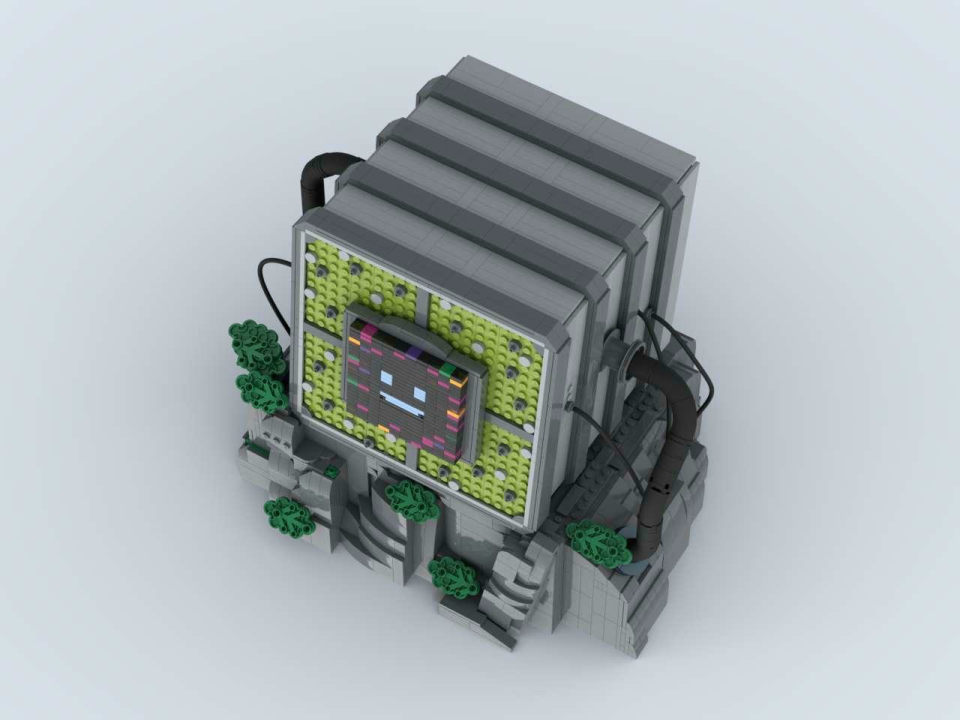

Singing GPU Mountain
Pieces: 2913
Dimensions (L⋅W⋅H): 28.1cm x 34.1cm x 29.7cm
Additional Links: Lego Ideas Submission (Ended)
One of the most iconic parts of Astro's Playroom is the giant singing GPU chip in the background of the levels in GPU Jungle. This build is mainly meant to be a display piece for hardcore fans of the game (like myself), focusing heavily on game-accurate features. Due to the size of the build I have not built it all physically yet—however I have done for the iconic smiling face, which can stand or hang on a wall. A Technic interior maintains the stability while minimizing weight.
↢

